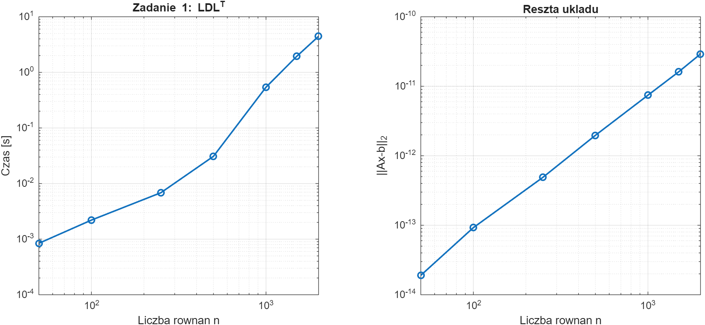
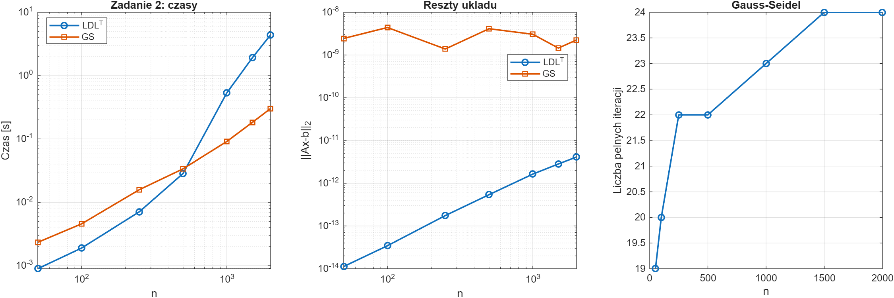
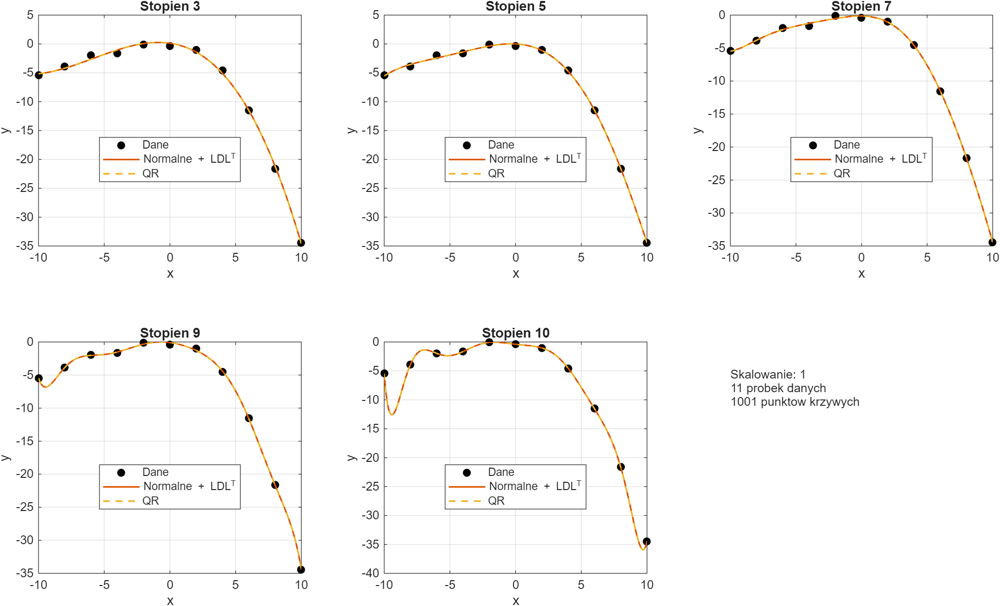
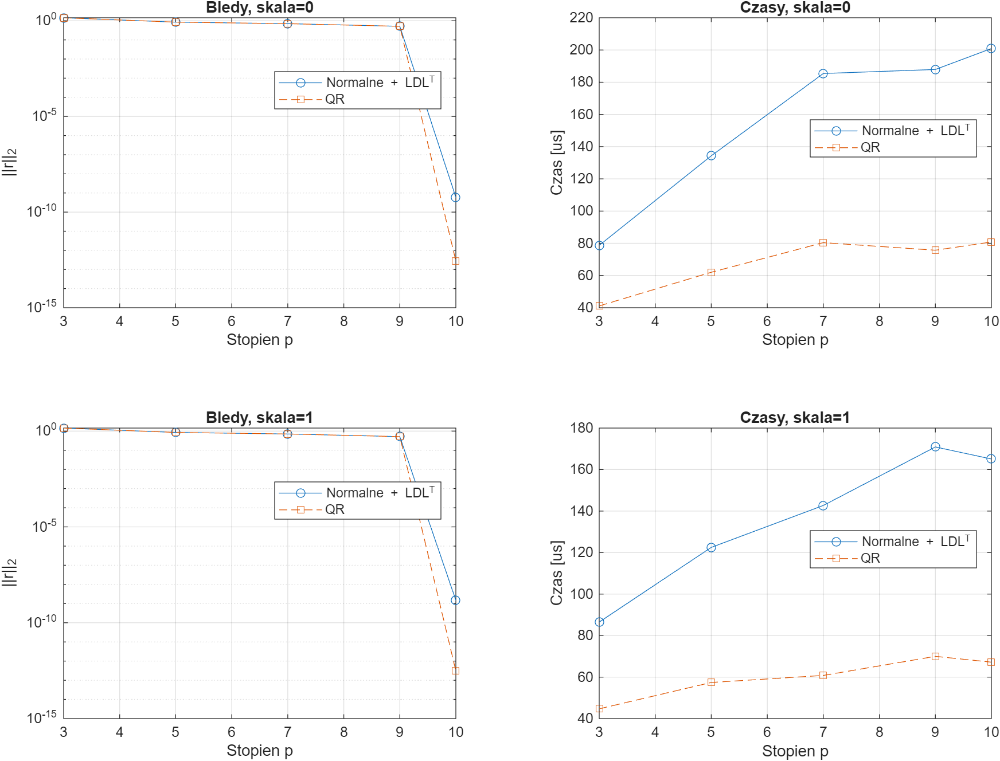

MNUM - projekt 1.8
Układy liniowe: LDLT i Gauss-Seidel.
Aproksymacja wielomianowa: równania normalne i QR.
Opracowanie do zadania MNUM-P1-26Zv2-08.pdf. Kod, wzory, samodzielne wyprowadzenia, eksperymenty i komentarze. Wyniki pochodzą z dołączonego uruchomienia MATLAB-a; czasy zależą od komputera i obciążenia.
Co wykorzystano z wykładów?
| Materiał Piotra Tatjewskiego | Slajdy / zastosowanie |
| MNUM_01_PojPodst_slajdy.pdf | 8-12: reprezentacja, zaokrąglenia, double i eps. Podstawa interpretacji dokładności. |
| MNUM_02_RownLn_slajdy.pdf | 1-5: normy; 8-11: uwarunkowanie; 12-13: podstawianie; 38-45: LLᵀ i LDLᵀ; 53-57: iteracje i Gauss-Seidel. |
| MNUM_03WartWl_slajdy.pdf | 1-3: ortogonalność i wąski QR; 31-33: MNK, równania normalne, cond₂(AᵀA) i przejście do QR. |
| MNUM_04RownNln_slajdy.pdf | Nie jest potrzebny: projekt nie dotyczy równań nieliniowych. |
| GS.m - Andrzej Karbowski | Oryginalna procedura przekazana przez użytkownika. Komentarz wskazuje podręcznik P. Tatjewskiego, Metody Numeryczne, OWPW 2013, s. 59. Nie korzystano z treści podręcznika poza tym opisem. |
Numery oznaczają strony PDF, zgodne z numeracją slajdów. Wyprowadzenia poniżej zapisano samodzielnie na podstawie tych wzorów. Dowody dominacji dla konkretnych macierzy, analiza kosztu, konwersja skali i komentarze do eksperymentów są uzupełnieniem opracowania.
Materiały źródłowe: github.com/MateuszJakubiak591/MNUM_proj1. Kopie wykorzystanych PDF-ów znajdują się w folderze zrodla. Pełne listingi zebrano na końcu, oddzielnie od teorii.
1. Rozkład LDLᵀ - wyprowadzenie
Szukamy rozkładu rzeczywistej macierzy symetrycznej A = LDLᵀ. L jest dolna trójkątna, lii = 1; D jest diagonalna. W kodzie d(i) przechowuje dii. Oznaczenie L odpowiada macierzy jednostkowej dolnej z wykładu; nie jest to L z rozkładu Cholesky’ego LLᵀ.
aji = (LDLᵀ)ji = ∑k=1min(j,i) ljkdkklik.
W i-tej kolumnie zaczynamy od j = i. Oddzielamy składnik k = i. Ponieważ lii = 1, otrzymujemy:
aii = ∑k=1i−1 lik²dkk + dii,
dii = aii − ∑k=1i−1 lik²dkk.
Dla j > i ostatni składnik sumy ma postać ljidii. Stąd:
aji = ∑k=1i−1 ljkdkklik + ljidii,
lji = (aji − ∑k=1i−1 ljkdkklik) / dii.
Pierwsza kolumna: d11 = a11, lj1 = aj1/d11. Następnie wyznaczamy kolumny i = 2,...,n. Puste sumy mają wartość zero. W kodzie wektor vk = dkklik pozwala wykonać te same sumy za pomocą mnożenia macierzy przez wektor.
Rozwiązanie układu po faktoryzacji
Ax = b ⇒ LDLᵀx = b ⇒ Ly = b, Dz = y, Lᵀx = z.
yi = bi − ∑j=1i−1 lijyj, i = 1,...,n;
zi = yi/dii;
xi = zi − ∑j=i+1n ljixj, i = n,...,1.
Są to bezpośrednio równania wierszowe układów trójkątnych. W procedurze nie ma wywołań ldl, chol, inv ani operatora rozwiązującego układ. Dzielenie przez pojedynczy dii jest zwykłym dzieleniem skalarnym. Źródło: wykład 02, slajdy 12 oraz 42-43.
2. Stosowalność, koszt i dokładność
Zgodnie z poleceniem solwer nie sprawdza symetrii, dodatniej określoności ani pivotów. Analizujemy je tutaj. Wersja bez przestawień wymaga niezerowych kolejnych dii; sama nieosobliwość nie wystarcza. Przykład A = [0,1;1,0] jest nieosobliwy, ale pierwszy pivot wynosi zero. Dla macierzy symetrycznych dodatnio określonych wszystkie pivoty są dodatnie.
Macierz z zadania 1
aij = 2(i+j)+1 (i ≠ j), aii = 4n²+(2i+4)n, bi = 2.5+0.6i.
si = ∑j≠i|aij| = (2n−4)i+n²+2n−1,
aii−si = 3n²+4i+2n+1 > 0.
A jest symetryczna i ściśle diagonalnie dominująca z dodatnią przekątną. Dodatnią określoność można wykazać bez obliczania wartości własnych: z 2|xixj| ≤ xi²+xj² wynika poniższe oszacowanie.
xᵀAx ≥ ∑i=1n (aii−si)xi² > 0, x ≠ 0.
κ₂(A) ≤ (9n²+2n−1)/(3n²+2n+5) < 3 (n ≥ 2).
Ostatnia nierówność wynika z dolnego ograniczenia λmin przez min(aii−si) i górnego λmax przez max(aii+si). Są to dobrze uwarunkowane układy, mimo rosnących elementów macierzy.
Koszt procedury ogólnej
∑i=1n (n−i)(i−1) = n(n−1)(n−2)/6.
Tyle składników występuje w sumach dla elementów pod przekątną. Każdy wymaga mnożenia i dodawania; dochodzą operacje O(n²). Faktoryzacja ma więc koszt Θ(n³), każde podstawianie Θ(n²), pamięć Θ(n²). Przechowanie D jako wektora wymaga O(n). Czasy MATLAB-a zależą także od wektoryzacji, pamięci i bibliotek BLAS.
Co oznacza wymagany „błąd”?
r = Ax̃−b, ε = ‖r‖₂, εrel = ‖r‖₂/‖b‖₂.
A(x̃−x*) = r ⇒ ‖x̃−x*‖₂/‖x*‖₂ ≤ κ₂(A) ‖r‖₂/‖b‖₂.
ε jest normą reszty, a nie bezpośrednio odległością od dokładnego x*. Ostatnia nierówność wynika z normy A⁻¹ i ‖b‖₂ ≤ ‖A‖₂‖x*‖₂. Reszta bezwzględna rośnie także ze skalą b; nie musi być stałą wielokrotnością eps. W MATLAB-ie eps = 2⁻⁵² ≈ 2.220446·10⁻¹⁶; unit roundoff przy zaokrąglaniu double to u = 2⁻⁵³. Wykład 01, slajd 12, rozróżnia te pojęcia.
3. Gauss-Seidel - wyprowadzenie
W tej sekcji A = L + D + U, gdzie L i U są ściśle trójkątne, a D diagonalna. To inne macierze L,D niż w faktoryzacji LDLᵀ. Z równania Ax = b przenosimy Ux na prawą stronę, a do iteracji podstawiamy poprzednie przybliżenie:
(D+L)x(k+1) = b−Ux(k).
W i-tym równaniu składniki o indeksach j < i są już wyznaczone w bieżącym przebiegu. Składniki o indeksach j > i pochodzą z przebiegu poprzedniego:
xi(k+1) = (bi − ∑j=1i−1 aijxj(k+1)
− ∑j=i+1n aijxj(k)) / aii.
Oryginalny GS.m oblicza najpierw w = Ux−b, a następnie podstawia w przód. Startuje od x(0) = b. Iteracja oznacza pełny przebieg po i = 1,...,n, nie pojedynczą aktualizację składowej.
Stop: ‖x(k)−x(k−1)‖₂ ≤ δ lub k = itmax,
δ = 10⁻⁹, itmax = 1000n.
Zwracana liczba iexe to liczba pełnych przebiegów. texe jest czasem mierzonym wewnątrz GS.m; w tabeli podano również zewnętrzny czas całej operacji razem z obliczeniem reszty. Kryterium stopu bada zmianę przybliżenia, a nie bezpośrednio normę reszty.
Macierz z zadania 2 i zbieżność
aii = 24.5, ai,i±3 = −5 (o ile indeks jest w zakresie),
aij = 0 dla pozostałych, bi = −6+0.5i.
Suma modułów elementów poza przekątną nie przekracza 10, więc 24.5 > 10. Macierz jest symetryczna dodatnio określona na mocy oszacowania z poprzedniej strony; GS jest zbieżny. Wartości własne leżą w [14.5,34.5], zatem κ₂(A) ≤ 34.5/14.5 ≈ 2.38.
Dla błędu iteracji e(k) = x(k)−x* mamy (D+L)e(k+1) = −Ue(k). Ogólny warunek zbieżności to promień spektralny macierzy iteracji mniejszy od 1 (wykład 02, slajd 53). Tutaj każdy wewnętrzny wiersz ma co najwyżej jeden poprzednik i jeden następnik o współczynniku 5. Indukcja po wierszach daje poniższą, niezależną od n, ocenę:
‖e(k+1)‖∞ ≤ q‖e(k)‖∞, q ≤ 5/(24.5−5) ≈ 0.25641.
Ta sama ocena dotyczy różnic kolejnych iteracji. Dla kryterium w normie 2 można dodatkowo użyć ‖v‖₂ ≤ √n‖v‖∞. Liczba iteracji może nieznacznie rosnąć z n i normą punktu startowego. Ogólna wersja GS.m na macierzy pełnej wykonuje Θ(kn²) działań i przechowuje Θ(n²) danych. Wersja świadoma pasma mogłaby osiągnąć Θ(kn), ale takiej optymalizacji nie wprowadzano do oryginału.
4. Wielomiany i równania normalne
Dla m = 11 par (xi,yi) wyznaczamy wielomiany stopni p = 3,5,7,9,10. Ustalamy kolejność współczynników zgodną z polyval:
f(x) = apxp + ap−1xp−1 + ... + a1x + a0,
a = [ap, ap−1, ..., a0]ᵀ, Vij = xip−j+1, j = 1,...,p+1.
Macierz V to macierz projektu, na slajdach MNK oznaczana A. Użycie V odróżnia ją od macierzy układów z zadań 1-2. Jej ostatnia kolumna jest jedynkowa, a Va to wartości wielomianu w węzłach.
J(a) = ‖Va−y‖₂² = (Va−y)ᵀ(Va−y)
= aᵀVᵀVa − 2aᵀVᵀy + yᵀy.
Różniczkujemy względem wektora a. Ponieważ VᵀV jest symetryczna, gradient składnika kwadratowego wynosi 2VᵀVa, a liniowego −2Vᵀy:
∇J(a) = 2VᵀVa−2Vᵀy = 0 ⇒ VᵀVa = Vᵀy.
Dla dowolnego niezerowego z zachodzi zᵀVᵀVz = ‖Vz‖₂². Węzły są różne, a p ≤ 10. Niezerowy wielomian stopnia p nie może mieć 11 różnych zer, więc kolumny V są liniowo niezależne. Stąd VᵀV jest dodatnio określona, hesjan 2VᵀV dodatnio określony, a znaleziony punkt jest jedynym minimum globalnym.
G = VᵀV, h = Vᵀy, G = LDLᵀ, Ga = h.
Układ Ga = h rozwiązujemy dokładnie własnym solwerem z zadania 1. W arytmetyce zmiennopozycyjnej utworzenie G pogarsza dokładność: dla wartości szczególnych σ₁ ≥ ... ≥ σp+1 > 0 macierzy V wartości własne VᵀV to ich kwadraty.
κ₂(VᵀV) = σ₁²/σp+1² = κ₂(V)².
To tożsamość dla macierzy dokładnej. W kolumnie cond_gram_computed_2 mierzona jest macierz G już zaokrąglona w MATLAB-ie; przy bardzo złym uwarunkowaniu nie musi spełniać tej równości numerycznie. Źródło równań normalnych i kwadratu uwarunkowania: wykład 03, slajdy 31-32.
Błędy aproksymacji
ri = polyval(a,xi)−yi,
E₂ = ‖r‖₂ = √(∑i=1m ri²), E∞ = ‖r‖∞ = maxi|ri|.
E₂ jest minimalizowane przez MNK; E∞ jest dodatkową miarą jakości i nie jest celem tej optymalizacji. Mała reszta układu Ga = h nie oznacza małego błędu aproksymacji E₂. Są to dwa różne problemy i dwie różne reszty.
5. QR, skalowanie i obliczanie wartości
Stosujemy wąski, znormalizowany rozkład V = QR, gdzie Q ma m wierszy i p+1 kolumn, QᵀQ = I, a R jest kwadratowa górna trójkątna. W MATLAB-ie odpowiada mu [Q,R] = qr(V,0).
VᵀVa = Vᵀy ⇒ RᵀQᵀQRa = RᵀQᵀy ⇒ RᵀRa = RᵀQᵀy.
R jest nieosobliwa, więc lewostronne skrócenie przez Rᵀ daje:
Ra = Qᵀy.
To wyprowadzenie algebraiczne nie oznacza tworzenia równań normalnych w kodzie QR. Kod oblicza Q,R bez tworzenia VᵀV, a następnie rozwiązuje układ trójkątny własnym podstawianiem:
ai = (ci − ∑j=i+1p+1 Rijaj)/Rii, c = Qᵀy.
Niezależne wyjaśnienie geometryczne: Va należy do przestrzeni kolumn Q, a (I−QQᵀ)y jest do niej prostopadły. Twierdzenie Pitagorasa daje:
‖Va−y‖₂² = ‖Ra−Qᵀy‖₂² + ‖(I−QQᵀ)y‖₂².
Drugi składnik nie zależy od a; pierwszy ma minimum zero dla Ra = Qᵀy. Ponieważ Q zachowuje długości wektorów, V i R mają te same wartości szczególne, zatem κ₂(R) = κ₂(V). QR unika kwadratu wskaźnika uwarunkowania. Źródło: wykład 03, slajdy 1-3 i 33.
Dodatkowy eksperyment: przeskalowanie zmiennej
t = (x−μ)/s, μ = (min(x)+max(x))/2, s = maxi|xi−μ|.
Tutaj μ = 0, s = 10, więc t = x/10 ∈ [−1,1]. Rozwiązujemy ten sam problem w bazie potęg t. Przestrzeń wielomianów się nie zmienia, zatem w dokładnej arytmetyce nie zmienia się optymalna funkcja. Zmieniają się skale kolumn i błędy numeryczne.
g(t) = ∑k=0p cktk, f(x) = g((x−μ)/s),
aj = ∑k=jp cks−k (k nad j) (−μ)k−j; μ = 0 ⇒ aj = cj/sj.
Wzór wynika z dwumianu Newtona dla (x−μ)k. Implementacja dokonuje tej konwersji przez składanie wielomianów w schemacie Hornera, dlatego zawsze zwraca a dla oryginalnego x. Do oceny wartości używa polyval(a,x), także do błędów w tabelach.
f(x) = (...((apx+ap−1)x+ap−2)x+...)+a0.
Horner wynika z kolejnego wyłączania x przed nawias. Wymaga p mnożeń i p dodawań na punkt. Krzywe rysujemy w 1001 punktach od −10 do 10: krok 0.02 wobec kroku 2 danych, czyli 100 razy gęściej niż próbki. Skalowanie, konwersja i powyższe wyprowadzenie Hornera są uzupełnieniem opracowania.
6. Pomiary - zadanie 1
Środowisko: MATLAB 25.2.0.3042426 (R2025b) Update 1, PCWIN64. Zapis uruchomienia: 2026-11-14 16:28:22 (czas lokalny). Typ danych double; eps = 2.220446049250313e-16.
Po wstępnej rozgrzewce solwerów dla każdego n wykonano trzy pomiary zewnętrznym tic/toc; tabela pokazuje medianę. Czas obejmuje faktoryzację, rozwiązanie i obliczenie reszty, a wyklucza tworzenie danych, drukowanie i rysowanie. Nie jest to sam czas faktoryzacji. Reszta jest wynikiem ostatniego powtórzenia.
| n | czas LDLᵀ [s] | ε = ‖Ax̃−b‖₂ | ε / ‖b‖₂ |
| 50 | 0.000842 | 1.901e-14 | 1.358e-16 |
| 100 | 0.002202 | 9.236e-14 | 2.490e-16 |
| 250 | 0.006844 | 4.882e-13 | 3.468e-16 |
| 500 | 0.030884 | 1.968e-12 | 5.010e-16 |
| 1000 | 0.540484 | 7.440e-12 | 6.744e-16 |
| 1500 | 1.942929 | 1.614e-11 | 7.982e-16 |
| 2000 | 4.447869 | 2.911e-11 | 9.363e-16 |

Reszty bezwzględne mieszczą się w zakresie 1.901e-14 do 2.911e-11. Są małymi ułamkami; reszty względne są rzędu 9.363e-16 lub mniejsze. Z oszacowania κ₂(A)<3 wynika mały błąd względny rozwiązania. Rosnąca reszta bezwzględna nie oznacza pogarszania uwarunkowania.
Czas dla n=2000 wyniósł 4.448 s wobec 0.000842 s dla n=50. Oczekiwany koszt jest sześcienny; nie należy dopasowywać dokładnie n³ do krótkich czasów zdominowanych przez narzuty, JIT i zmiany sprawności operacji pamięciowych.
7. Pomiary - zadanie 2
Obie metody otrzymują tę samą pełną macierz (full). Nie wykorzystano sparse ani specjalnego algorytmu pasmowego. Dzięki temu porównanie dotyczy podanych implementacji. Pomimo wielu zer ogólny LDLᵀ wykonuje mnożenia pełnych fragmentów macierzy.
| n | LDLᵀ [s] | ε LDLᵀ | GS [s] | ε GS | iteracje |
| 50 | 0.000895 | 1.126e-14 | 0.002334 | 2.442e-09 | 19 |
| 100 | 0.001893 | 3.452e-14 | 0.004566 | 4.403e-09 | 20 |
| 250 | 0.007092 | 1.751e-13 | 0.015829 | 1.382e-09 | 22 |
| 500 | 0.028527 | 5.398e-13 | 0.033788 | 4.118e-09 | 22 |
| 1000 | 0.534408 | 1.634e-12 | 0.091392 | 3.060e-09 | 23 |
| 1500 | 1.919933 | 2.824e-12 | 0.183050 | 1.453e-09 | 24 |
| 2000 | 4.391299 | 4.113e-12 | 0.302027 | 2.246e-09 | 24 |

GS wykonał od 19 do 24 iteracji, znacznie mniej niż limit 1000n. Odpowiada to silnej dominacji diagonalnej i ocenie kontrakcji niezależnej od n. Nie ma powodu oczekiwać liczby iteracji proporcjonalnej do liczby równań.
Maksymalna reszta LDLᵀ to 4.113e-12, a GS 4.403e-09. GS kończy po osiągnięciu δ dla zmiany iteratów, dlatego jego reszta jest większa niż metody bezpośredniej i nie musi wynosić δ. Obie metody prowadzą do bliskich rozwiązań; największa norma ich różnicy wyniosła 3.008e-10.
Przy n=2000 zmierzono 4.391 s dla LDLᵀ oraz 0.302 s dla GS (stosunek LDLᵀ/GS = 14.54). Dla macierzy pełnej GS ma koszt Θ(kn²), a LDLᵀ Θ(n³). Porównanie czasów dla małych n może być zaburzone narzutem pętli i przygotowania D,L,U.
W pliku zadanie2.csv dodatkowo zapisano czas texe zwracany przez GS.m. Nie obejmuje on obliczenia reszty na zewnątrz; dlatego wykresy i główna tabela używają porównywalnych zewnętrznych pomiarów. Pełne dane liczbowe i różnice rozwiązań są dostępne w CSV, MAT i JSON.
8. Pomiary - aproksymacja
Dane: x = −10,−8,...,10; y = [−5.460, −3.880, −1.969, −1.666, −0.076, −0.397, −1.030, −4.548, −11.528, −21.641, −34.445]. E₂ i E∞ są liczone wyłącznie w tych 11 punktach.
Wariant podstawowy: bez skalowania, V w potęgach x
| p | E₂ normalne | E∞ normalne | E₂ QR | E∞ QR | κ₂(V) |
| 3 | 1.439e+00 | 6.772e-01 | 1.439e+00 | 6.772e-01 | 7.382e+02 |
| 5 | 8.504e-01 | 4.645e-01 | 8.504e-01 | 4.645e-01 | 8.624e+04 |
| 7 | 7.071e-01 | 4.449e-01 | 7.071e-01 | 4.449e-01 | 1.001e+07 |
| 9 | 5.151e-01 | 3.020e-01 | 5.151e-01 | 3.020e-01 | 1.173e+09 |
| 10 | 5.946e-10 | 3.437e-10 | 2.803e-13 | 2.238e-13 | 1.523e+10 |
Wariant dodatkowy: skalowanie t = x/10
| p | E₂ normalne | E∞ normalne | E₂ QR | E∞ QR | κ₂(V) |
| 3 | 1.439e+00 | 6.772e-01 | 1.439e+00 | 6.772e-01 | 7.104e+00 |
| 5 | 8.504e-01 | 4.645e-01 | 8.504e-01 | 4.645e-01 | 3.920e+01 |
| 7 | 7.071e-01 | 4.449e-01 | 7.071e-01 | 4.449e-01 | 2.713e+02 |
| 9 | 5.151e-01 | 3.020e-01 | 5.151e-01 | 3.020e-01 | 2.887e+03 |
| 10 | 1.485e-09 | 9.081e-10 | 3.109e-13 | 2.700e-13 | 1.395e+04 |
Dla p=10 liczba współczynników jest równa liczbie danych. W dokładnej arytmetyce otrzymujemy wielomian interpolacyjny i zerową resztę. Pozostałe reszty są skutkiem zaokrągleń. To nie dowodzi dobrej jakości modelu pomiędzy węzłami ani poza zakresem danych.
Przestrzenie wielomianów są zagnieżdżone, więc minimalny E₂ w dokładnej arytmetyce nie może rosnąć ze stopniem. E∞ nie ma analogicznej gwarancji dla rozwiązań MNK. Różnice między normalnymi a QR przy wysokich stopniach należy wiązać przede wszystkim z uwarunkowaniem i arytmetyką, nie z innym celem optymalizacji.
Czasy [µs] - mediany z 201 wywołań po rozgrzewce
| p | normalne, x | QR, x | normalne, x/10 | QR, x/10 |
| 3 | 78.70 | 41.10 | 86.50 | 44.70 |
| 5 | 134.30 | 62.00 | 122.50 | 57.40 |
| 7 | 185.40 | 80.40 | 142.70 | 60.80 |
| 9 | 187.90 | 75.70 | 170.90 | 70.00 |
| 10 | 200.90 | 80.80 | 165.10 | 67.20 |
Mierzono całą poly_lsq: budowę V, rozwiązanie, konwersję współczynników i obliczenie błędów. Kolejność wywołań obu metod zmieniano naprzemiennie. Dla tak małych macierzy narzuty funkcji są istotne, a wbudowane QR korzysta ze zoptymalizowanych bibliotek. Nie można na tej podstawie twierdzić, że jedna metoda zawsze jest szybsza.
9. Otrzymane funkcje na tle danych
Wariant wymagany: bez skalowania. Każdy panel przedstawia osobny stopień, dane pomiarowe oraz obie metody. Nakładanie się krzywych oznacza zbliżone dopasowanie w skali rysunku, nie identyczność wszystkich cyfr współczynników.
Krzywe obliczono funkcją polyval w 1001 punktach. Szczególnie dla p=9 i p=10 dopasowanie w węzłach może współistnieć z wyraźnymi oscylacjami między nimi. Wysoki stopień zwiększa swobodę modelu; nie ma danych walidacyjnych, które pozwalałyby ocenić błąd względem nieznanej funkcji rzeczywistej.
Jak czytać współczynniki?
Pełne wektory wszystkich stopni i obu metod zapisano w wyniki/wspolczynniki.txt z 17 cyframi znaczącymi. Kolejność to [a_p,...,a_0]. Na kolejnych stronach podano wybrane wartości oraz wszystkie wektory QR po skalowaniu. Nie są to współczynniki w zmiennej t: kod przelicza je na oryginalne x.
10. Wpływ skalowania i uwarunkowania

Porównanie wskaźników uwarunkowania
| p | κ₂(V), potęgi x | κ₂(V), potęgi x/10 | κ₂(V)², baza x |
| 3 | 7.382e+02 | 7.104e+00 | 5.450e+05 |
| 5 | 8.624e+04 | 3.920e+01 | 7.437e+09 |
| 7 | 1.001e+07 | 2.713e+02 | 1.002e+14 |
| 9 | 1.173e+09 | 2.887e+03 | 1.375e+18 |
| 10 | 1.523e+10 | 1.395e+04 | 2.320e+20 |
W bazie x najwyższa potęga dla p=10 osiąga 10¹⁰, podczas gdy kolumna stała ma wartość 1. W bazie x/10 potęgi mają moduł nie większy niż 1. Skalowanie ogranicza różnice wielkości kolumn i zmniejsza uwarunkowanie, ale nie usuwa wszystkich problemów bazy jednomianowej. Dla większych stopni można rozważać bazy ortogonalne; nie jest to część wymaganego projektu.
W tym uruchomieniu dla p=10 reszta normalnych po skalowaniu wyniosła 1.485e-09, wobec 5.946e-10 bez skalowania, czyli była większa mimo znacznie mniejszego κ₂(V). Wskaźnik uwarunkowania opisuje wrażliwość w najgorszym przypadku, a nie gwarantowaną resztę konkretnego obliczenia. Zmieniają się zaokrąglenia przy tworzeniu G, faktoryzacji i ocenie wielomianu; nie wolno deklarować automatycznej poprawy każdej mierzonej reszty.
11. Błędy i koszty aproksymacji

Normalne i QR rozwiązują to samo zadanie MNK. Gdy reszta dopasowania jest znacznie większa od błędów zaokrągleń, obie metody dają niemal ten sam E₂. Przy interpolacji p=10 te błędy stają się widoczne, bo teoretyczna reszta wynosi zero.
Dla m punktów i q=p+1 współczynników utworzenie V kosztuje O(mq). Równania normalne wymagają O(mq²) na VᵀV i O(q³) na LDLᵀ. Wąski QR ma koszt O(mq²) dla m≥q. Obie metody mają więc podobny rząd kosztu, lecz różne stałe i własności numeryczne. QR jest zwykle bezpieczniejszym wyborem przy źle uwarunkowanej macierzy projektu.
12. Współczynniki i wnioski
Wielomiany QR po skalowaniu - współczynniki dla x
p = 3: [-0.01148611111, -0.2001736597, -0.3247525253, 0.1305827506]
p = 5: [6.924078526e-05, -0.0001076995921, -0.02025661058, -0.1894037005, -0.1135219697, 0.006512820513]
p = 7: [-8.841492326e-07, 5.165951797e-06, 0.0002215864992, -0.0008872886815, -0.02749372447, -0.161120584, -0.03111283104, -0.1377581242]
p = 9: [-1.257356512e-07, 8.459768399e-08, 2.48546782e-05, -1.094144723e-05, -0.001460845269, 3.615360686e-05, 0.01140390212, -0.1773854204, -0.2623005952, -0.09501355301]
p = 10: [5.95830147e-08, -1.257356512e-07, -1.271007074e-05, 2.48546782e-05, 0.0009001186343, -0.001460845269, -0.02492050385, 0.01140390212, 0.04707830853, -0.2623005952, -0.397]
Wnioski końcowe
1. Własny LDLᵀ rozwiązuje oba typy dobrze uwarunkowanych układów z małymi resztami. Ogólna faktoryzacja bez pivotingu jest uzasadniona dodatnią określonością badanych macierzy, a nie samym faktem ich nieosobliwości.
2. GS jest zbieżny dzięki silnej dominacji diagonalnej. Dla rosnącego n wykonuje niewiele iteracji w porównaniu z dopuszczonym limitem. Mniejszy koszt uzyskuje przy dokładności określonej przez δ; nie ma tej samej reszty co metoda bezpośrednia.
3. Obie metody MNK minimalizują tę samą sumę kwadratów. Normalne wzmacniają problem uwarunkowania przez kwadrat κ₂(V). QR nie tworzy VᵀV, dlatego lepiej zachowuje dokładność, szczególnie przy wysokich stopniach.
4. Skalowanie x do [−1,1] poprawia uwarunkowanie bez zmiany przestrzeni aproksymujących funkcji. Nie gwarantuje mniejszej reszty w każdym obliczeniu. Stopień 10 interpoluje 11 danych, ale zerowa reszta w próbkach nie stanowi dowodu najlepszego modelu. Bez założeń o błędach pomiarów i zbioru walidacyjnego nie można wskazać stopnia najlepszego do przewidywania.
Uruchomienie i weryfikacja
W MATLAB-ie przejdź do folderu kod i wykonaj results = run_project;. Skrypt najpierw wywoła test_solvers, a potem odtworzy pomiary, wykresy, CSV, JSON i MAT. Sam PDF można odbudować skryptem generuj_sprawozdanie.py po ponownym uruchomieniu eksperymentów.
Testy porównują własny LDLᵀ z rozwiązaniem referencyjnym A\b poza solwerem, kontrolują odtworzenie A = LDLᵀ oraz znany wielomian. Obejmują n=1, macierze losowe dodatnio określone, macierz nieokreśloną z niezerowymi pivotami i konwersję skali na niesymetrycznej dziedzinie. Wszystkie testy zakończyły się poprawnie.
Plik GS.m zachowano bez zmian obliczeniowych. Rysunki i drukowanie znajdują się poza solwerami. Wywołanie wbudowanego QR występuje jedynie w dozwolonej gałęzi aproksymacji; gotowe rozwiązanie układu jest używane tylko jako odniesienie w osobnym pliku testowym.
Listing: ldlt_solve.m
1 function [x, epsilon, L, d] = ldlt_solve(A, b) 2 %LDLT_SOLVE Rozwiazanie Ax=b przez wlasna faktoryzacje A=L*D*L'. 3 % A - rzeczywista macierz symetryczna z niezerowymi pivotami LDLT. 4 % b - wektor prawej strony; x - rozwiazanie kolumnowe. 5 % epsilon = norm(A*x-b,2); L - dolna trojkatna z jedynkami na diagonali. 6 % d(i) = d_ii, czyli D=diag(d). Bez testow stosowalnosci i bez pivotingu. 7 % W szczegolnosci procedura dziala dla macierzy dodatnio okreslonych. 8 % Nie uzywa ldl, chol, inv, mldivide ani innych gotowych solwerow. 9 n = size(A, 1); 10 b = b(:); 11 L = eye(n); 12 d = zeros(n, 1); 13 14 % Faktoryzacja kolumnowa: wzory ze slajdow 42-43 wykladu 02. 15 for i = 1:n 16 k = 1:i-1; 17 v = d(k,1) .* L(i,k).'; 18 d(i) = A(i,i) - L(i,k)*v; 19 if i < n 20 L(i+1:n,i) = (A(i+1:n,i) - L(i+1:n,k)*v) / d(i); 21 end 22 end 23 24 % Podstawianie w przod: L*y=b, l_ii=1. 25 y = zeros(n, 1); 26 for i = 1:n 27 y(i) = b(i) - L(i,1:i-1)*y(1:i-1,1); 28 end 29 30 % Uklad diagonalny D*z=y (dzielenie skalarne, nie macierzowe). 31 z = y ./ d; 32 33 % Podstawianie wstecz: L'*x=z, l_ii=1. 34 x = zeros(n, 1); 35 for i = n:-1:1 36 x(i) = z(i) - L(i+1:n,i).'*x(i+1:n,1); 37 end 38 epsilon = norm(A*x-b, 2); 39 end
Listing: back_substitution.m
1 function a = back_substitution(R, c) 2 %BACK_SUBSTITUTION Wlasne podstawianie wstecz dla R*a=c. 3 % R - nieosobliwa macierz gorna trojkatna, c - wektor kolumnowy. 4 n = size(R, 1); 5 a = zeros(n, 1); 6 for i = n:-1:1 7 a(i) = (c(i) - R(i,i+1:n)*a(i+1:n,1)) / R(i,i); 8 end 9 end
Listing: poly_lsq.m
1 function [a, e2, einf, info] = poly_lsq(x, y, p, metoda, skala)
2 %POLY_LSQ Uniwersalna aproksymacja wielomianem stopnia p.
3 % metoda: 'normal' -> rownania normalne i wlasny LDLT;
4 % 'qr' -> ekonomiczny qr(V,0) i wlasne podstawianie.
5 % skala=false (domyslnie): baza 1,x,...,x^p;
6 % skala=true: t=(x-mu)/s, lepsze uwarunkowanie bazy.
7 % a jest ZAWSZE wektorem [a_p;...;a_0] w oryginalnej zmiennej x.
8 % polyval(a,x) daje wartosci; e2 i einf liczone w wezlach pomiarowych.
9 % info.c - wspolczynniki w zmiennej t; info.mu i info.s - przeskalowanie.
10 % info.epsilon_normal - reszta ukladu normalnego (nie blad aproksymacji).
11 if nargin < 5, skala = false; end
12 x = x(:); y = y(:);
13 m = numel(x);
14 if numel(y) ~= m || p < 0 || p ~= fix(p) || p >= m
15 error('poly_lsq:dane', 'Wymagane: tyle samo x,y oraz 0<=p<liczba probek.');
16 end
17 mu = 0; s = 1;
18 if skala
19 mu = (min(x)+max(x))/2;
20 s = max(abs(x-mu));
21 if s == 0, s = 1; end
22 end
23 t = (x-mu)/s;
24
25 % Macierz V (oznaczenie A z wykladu 03), kolejnosc dla polyval.
26 V = ones(m, p+1);
27 for j = p:-1:1
28 V(:,j) = t .* V(:,j+1);
29 end
30 epsilon_normal = NaN;
31 switch lower(metoda)
32 case 'normal'
33 G = V.'*V;
34 h = V.'*y;
35 [c, epsilon_normal] = ldlt_solve(G, h);
36 case 'qr'
37 [Q, R] = qr(V, 0);
38 c = back_substitution(R, Q.'*y);
39 otherwise
40 error('poly_lsq:metoda', 'Metoda musi byc normal albo qr.');
41 end
42
43 % Przejscie c(t) -> a(x) przez schemat Hornera i skladanie wielomianow.
44 a = c(1);
45 for j = 2:p+1
46 a = conv(a(:).', [1/s, -mu/s]);
47 a(end) = a(end) + c(j);
48 end
49 a = a(:);
50 r = polyval(a, x) - y;
51 e2 = norm(r, 2);
52 einf = norm(r, inf);
53 info = struct('c',c,'mu',mu,'s',s,'epsilon_normal',epsilon_normal);
54 endListing: GS.m
Autor: Andrzej Karbowski. Kod źródłowy przekazany przez użytkownika; zachowano oryginalną implementację.
1 function [xf, iexe, texe]=GS(A,b,delta,imax) 2 % 3 % CEL, ALGORYTM 4 % Rozwiazanie ukladu rownan liniowych Ax=b 5 % iteracyjna metoda Gaussa-Seidela. 6 % Implementacja wedlug podrecznika Piotra Tatjewskiego 7 % "Metody Numeryczne", OWPW 2013, str. 59. 8 % 9 % PARAMETRY WEJSCIOWE 10 % A - macierz kwadratowa zdominowana diagonalnie 11 % lub symetryczna, dodatnio okreslona 12 % b - wektor kolumnowy prawych stron 13 % delta - dokladnosc 14 % imax - maksymalna liczba iteracji 15 % 16 % PARAMETRY WYJSCIOWE 17 % xf - rozwiazanie 18 % iexe - liczba iteracji wykonanych 19 % texe - czas obliczen [s] 20 % 21 % PRZYKLADOWE WYWOLANIE 22 % >> G=rand(5) 23 % >> A=G*G' 24 % >> b=rand(5,1) 25 % >> [xf, iexe, texe] = GS(A, b, 1e-8, 5000) 26 % >> norm(A*xf-b) 27 % 28 % AUTOR, PROJEKT 29 % Andrzej Karbowski, 30 % Projekt z "Metod numerycznych" MNUM, 31 % WEiTI PW 32 % 33 tic; 34 D=diag(diag(A)); 35 U=triu(A)-D; 36 L=tril(A)-D; 37 n=size(b,1); 38 x=b; xold=0;k=0; 39 while norm(xold-x) > delta & k < imax 40 xold=x; k=k+1; 41 w=U*x-b; 42 for i=1:n 43 x(i)=(-L(i,1:i-1)*x(1:i-1)-w(i))/D(i,i); 44 end 45 end 46 texe=toc; iexe =k; xf=x;
Listing: test_solvers.m
1 function test_solvers
2 %TEST_SOLVERS Sprawdzenie niezalezne od benchmarku; gotowy A\b tylko tutaj.
3 rng(8);
4 for n = [1, 2, 7, 23]
5 B = randn(n);
6 A = B*B.' + eye(n);
7 b = randn(n,1);
8 [x, e, L, d] = ldlt_solve(A,b);
9 assert(norm(A-L*diag(d)*L.','fro')/norm(A,'fro') < 1e-13);
10 assert(norm(x-A\b)/max(1,norm(x)) < 1e-12);
11 assert(e/max(1,norm(b)) < 1e-12);
12 end
13 % Macierz symetryczna nieokreslona z niezerowymi pivotami.
14 A = [2,1;1,-2]; b = [1;3];
15 x = ldlt_solve(A,b);
16 assert(norm(A*x-b) < 1e-13);
17
18 % Znany wielomian i niesymetryczna dziedzina: sprawdza konwersje skali.
19 x = linspace(2,8,15).'; a0 = [2;-3;4;-1]; y = polyval(a0,x);
20 for scaled = [false,true]
21 for method = {'normal','qr'}
22 [a,e2] = poly_lsq(x,y,3,method{1},scaled);
23 assert(norm(a-a0)/norm(a0) < 1e-7);
24 assert(e2/norm(y) < 1e-10);
25 end
26 end
27 % Porownanie z wbudowanym MNK tylko w niezaleznym tescie.
28 x = (-10:2:10).'; y = sin(x);
29 for p = [3,5,7,9,10]
30 [a,~,~,info] = poly_lsq(x,y,p,'qr',true);
31 V = x .^ (p:-1:0);
32 aref = V\y;
33 assert(norm(polyval(a,x)-polyval(aref,x)) < 1e-7);
34 assert(norm(polyval(a,x)-polyval(info.c,(x-info.mu)/info.s)) < 1e-10);
35 end
36 fprintf('TESTY: wszystkie sprawdzenia zakonczone poprawnie.\n');
37 endListing: run_project.m
1 function results = run_project
2 %RUN_PROJECT Wszystkie eksperymenty projektu MNUM 1.8.
3 % Uruchom: cd do folderu kod, nastepnie results=run_project.
4 % Solwery nie rysuja i nie wypisuja. Wszystkie wyniki trafiaja do ../wyniki.
5 root = fileparts(fileparts(mfilename('fullpath')));
6 out = fullfile(root,'wyniki');
7 if ~exist(out,'dir'), mkdir(out); end
8 oldVisibility = get(groot,'defaultFigureVisible');
9 cleanup = onCleanup(@() set(groot,'defaultFigureVisible',oldVisibility));
10 set(groot,'defaultFigureVisible','off');
11 test_solvers;
12 ns = [50;100;250;500;1000;1500;2000];
13 repeats = 3;
14 delta = 1e-9;
15 results.meta = struct('matlab',version,'computer',computer, ...
16 'timestamp',char(datetime('now','Format','yyyy-MM-dd HH:mm:ss')), ...
17 'eps',eps,'repeats',repeats,'delta',delta, ...
18 'timing','Median of external tic/toc; includes residual; excludes data and plots');
19
20 % Rozgrzewka JIT i bibliotek poza pomiarami.
21 ldlt_solve([4,1;1,3],[1;2]);
22 GS([4,1;1,3],[1;2],delta,2000);
23 T1 = zeros(numel(ns),4);
24 T2 = zeros(numel(ns),8);
25 for q = 1:numel(ns)
26 n = ns(q); i = (1:n).';
27
28 % Punkt 1: macierz pelna, czas zawiera faktoryzacje i reszte.
29 A = 2*(i+i.')+1;
30 A(1:n+1:end) = 4*n^2+(2*i+4)*n;
31 b = 2.5+0.6*i;
32 elapsed = zeros(repeats,1);
33 for rep = 1:repeats
34 t = tic;
35 [x,epsilon] = ldlt_solve(A,b);
36 elapsed(rep) = toc(t);
37 end
38 T1(q,:) = [n,median(elapsed),epsilon,epsilon/norm(b)];
39
40 % Punkt 2: obydwa solwery otrzymuja identyczne macierze PELNE.
41 % Pozwala porownac algorytmy bez zmiany reprezentacji danych.
42 A = 24.5*eye(n)+diag(-5*ones(n-3,1),3)+diag(-5*ones(n-3,1),-3);
43 b = -6+0.5*i;
44 td = zeros(repeats,1); tg = td; tgInternal = td;
45 for rep = 1:repeats
46 t = tic;
47 [xd,ed] = ldlt_solve(A,b);
48 td(rep) = toc(t);
49 t = tic;
50 [xg,k,tgInternal(rep)] = GS(A,b,delta,1000*n);
51 eg = norm(A*xg-b,2);
52 tg(rep) = toc(t);
53 end
54 T2(q,:) = [n,median(td),ed,median(tg),eg,k, ...
55 median(tgInternal),norm(xd-xg,2)];
56 fprintf('n=%4d: LDLT(1) %.3fs; LDLT(2) %.3fs; GS %.3fs, k=%d\n', ...
57 n,T1(q,2),T2(q,2),T2(q,4),k);
58 end
59 results.task1 = array2table(T1,'VariableNames', ...
60 {'n','time_ldlt_s','residual_2','relative_residual_2'});
61 results.task2 = array2table(T2,'VariableNames', ...
62 {'n','time_ldlt_s','residual_ldlt_2','time_gs_s','residual_gs_2', ...
63 'iterations_gs','time_gs_internal_s','difference_solutions_2'});
64 writetable(results.task1,fullfile(out,'zadanie1.csv'));
65 writetable(results.task2,fullfile(out,'zadanie2.csv'));Listing: run_project.m (ciąg dalszy)
66
67 % Wykresy zadania 1.
68 f = figure('Position',[100,100,1100,450]);
69 tiledlayout(1,2);
70 nexttile; loglog(ns,T1(:,2),'-o','LineWidth',1.5); grid on;
71 xlabel('Liczba rownan n'); ylabel('Czas [s]'); title('Zadanie 1: LDL^T');
72 nexttile; loglog(ns,T1(:,3),'-o','LineWidth',1.5); grid on;
73 xlabel('Liczba rownan n'); ylabel('||Ax-b||_2'); title('Reszta ukladu');
74 saveplot(f,out,'zadanie1');
75
76 % Wykresy zadania 2, w tym liczba iteracji GS.
77 f = figure('Position',[100,100,1400,430]); tiledlayout(1,3);
78 nexttile; loglog(ns,T2(:,2),'-o',ns,T2(:,4),'-s','LineWidth',1.5);
79 grid on; xlabel('n'); ylabel('Czas [s]'); legend('LDL^T','GS','Location','best');
80 title('Zadanie 2: czasy');
81 nexttile; loglog(ns,T2(:,3),'-o',ns,T2(:,5),'-s','LineWidth',1.5);
82 grid on; xlabel('n'); ylabel('||Ax-b||_2'); legend('LDL^T','GS','Location','best');
83 title('Reszty ukladu');
84 nexttile; plot(ns,T2(:,6),'-o','LineWidth',1.5); grid on;
85 xlabel('n'); ylabel('Liczba pelnych iteracji'); title('Gauss-Seidel');
86 saveplot(f,out,'zadanie2');
87
88 % Punkt 3: dane i wszystkie wymagane stopnie.
89 x = (-10:2:10).';
90 y = [-5.460;-3.880;-1.969;-1.666;-0.076;-0.397;-1.030; ...
91 -4.548;-11.528;-21.641;-34.445];
92 degrees = [3;5;7;9;10];
93 xx = linspace(min(x),max(x),1001).'; % krok 0.02 zamiast 2: 100x gesciej
94 approxRepeats = 201;
95 T3 = zeros(10,10); coefficients = cell(10,2);
96 for scaled = [false,true]
97 f = figure('Position',[100,100,1300,750]); tiledlayout(2,3);
98 for q = 1:numel(degrees)
99 p = degrees(q); row = q+5*scaled;
100 for method = {'normal','qr'}
101 poly_lsq(x,y,p,method{1},scaled); % rozgrzewka
102 end
103 tn = zeros(approxRepeats,1); tq = tn;
104 for rep = 1:approxRepeats
105 % Naprzemienna kolejnosc zmniejsza systematyczny wplyw kolejnosci.
106 if mod(rep,2)
107 t=tic; [an,en2,eni]=poly_lsq(x,y,p,'normal',scaled); tn(rep)=toc(t);
108 t=tic; [aq,eq2,eqi]=poly_lsq(x,y,p,'qr',scaled); tq(rep)=toc(t);
109 else
110 t=tic; [aq,eq2,eqi]=poly_lsq(x,y,p,'qr',scaled); tq(rep)=toc(t);
111 t=tic; [an,en2,eni]=poly_lsq(x,y,p,'normal',scaled); tn(rep)=toc(t);
112 end
113 end
114 tnodes=x;
115 if scaled, tnodes=x/10; end
116 V = tnodes .^ (p:-1:0);
117 T3(row,:)=[p,scaled,median(tn),en2,eni,median(tq),eq2,eqi, ...
118 cond(V,2),cond(V.'*V,2)];
119 coefficients(row,:)={an,aq};
120 nexttile; plot(x,y,'ko','MarkerFaceColor','k'); hold on;
121 plot(xx,polyval(an,xx),'-',xx,polyval(aq,xx),'--','LineWidth',1.3);
122 grid on; xlabel('x'); ylabel('y'); title(sprintf('Stopien %d',p));
123 legend('Dane','Normalne + LDL^T','QR','Location','best');
124 end
125 nexttile; axis off;
126 text(0,0.8,sprintf('Skalowanie: %d\n11 probek danych\n1001 punktow krzywych',scaled));
127 saveplot(f,out,sprintf('zadanie3_skala%d',scaled));
128 end
129 results.task3=array2table(T3,'VariableNames',{'degree','scaled','time_normal_s', ...
130 'error_normal_2','error_normal_inf','time_qr_s','error_qr_2','error_qr_inf', ...Listing: run_project.m (ciąg dalszy)
131 'cond_V_2','cond_gram_computed_2'});
132 results.coefficients=coefficients;
133 results.x_data=x; results.y_data=y;
134 results.meta.approx_repeats=approxRepeats;
135 writetable(results.task3,fullfile(out,'zadanie3.csv'));
136 fid=fopen(fullfile(out,'wspolczynniki.txt'),'w','n','UTF-8');
137 for row=1:10
138 fprintf(fid,'p=%d, skala=%d; [a_p,...,a_0] w zmiennej x\n',T3(row,1:2));
139 fprintf(fid,'normal: '); fprintf(fid,'%.17g ',coefficients{row,1}); fprintf(fid,'\n');
140 fprintf(fid,'qr: '); fprintf(fid,'%.17g ',coefficients{row,2});
fprintf(fid,'\n\n');
141 end
142 fclose(fid);
143 % Dodatkowe wykresy bledow i czasow MNK dla obu baz.
144 f=figure('Position',[100,100,1100,800]); tiledlayout(2,2);
145 for scaled=[false,true]
146 rows=(1:5)+5*scaled;
147 nexttile; semilogy(degrees,T3(rows,4),'-o',degrees,T3(rows,7),'--s');
148 grid on; xlabel('Stopien p'); ylabel('||r||_2');
149 legend('Normalne + LDL^T','QR','Location','best'); title(sprintf('Bledy,
skala=%d',scaled));
150 nexttile; plot(degrees,1e6*T3(rows,3),'-o',degrees,1e6*T3(rows,6),'--s');
151 grid on; xlabel('Stopien p'); ylabel('Czas [us]');
152 legend('Normalne + LDL^T','QR','Location','best'); title(sprintf('Czasy,
skala=%d',scaled));
153 end
154 saveplot(f,out,'zadanie3_bledy_czasy');
155 save(fullfile(out,'wyniki.mat'),'results');
156 fid=fopen(fullfile(out,'wyniki.json'),'w','n','UTF-8');
157 json=struct('meta',results.meta,'task1',table2struct(results.task1), ...
158 'task2',table2struct(results.task2),'task3',table2struct(results.task3), ...
159 'coefficients',{coefficients});
160 fprintf(fid,'%s',jsonencode(json,'PrettyPrint',true)); fclose(fid);
161 disp(results.task1); disp(results.task2); disp(results.task3);
162 fprintf('Gotowe. Wyniki zapisano w: %s\n',out);
163 end
164
165 function saveplot(f,out,name)
166 exportgraphics(f,fullfile(out,[name,'.png']),'Resolution',180);
167 close(f);
168 end